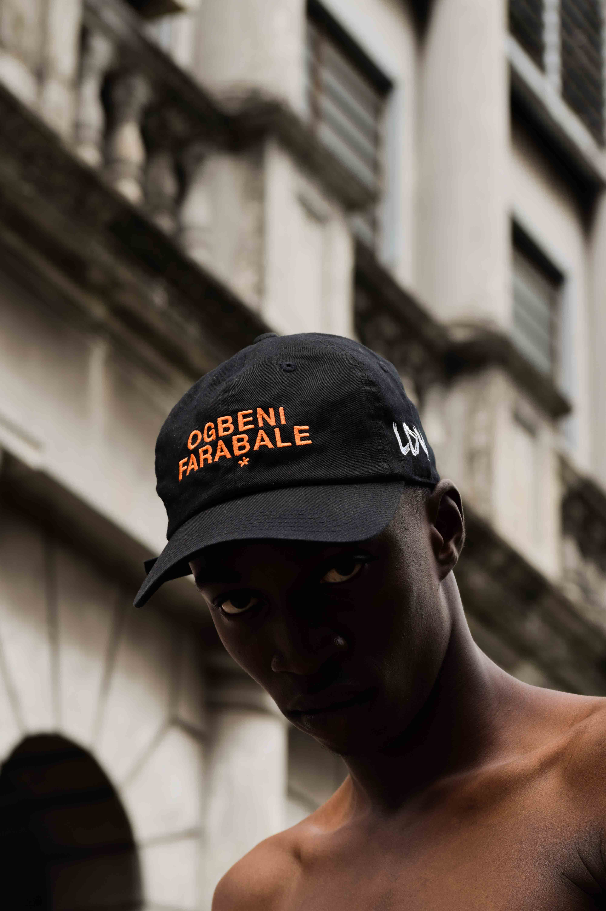

Bonnet
Le bonnet ou tuque (au Canada francophone)1 est un vêtement qui se porte sur la tête. C'est la plus vieille forme de couvre-chef connue. Il est de forme arrondie comme une sorte de calotte épousant la forme du dessus du crâne. Il se décline ensuite couvrant plus ou moins la tête, les oreilles et la nuque ; il peut être avec ou sans bord. Quand il descend bas sur la tête et qu'il comporte des liens, on parle de capuchon. Il peut être constitué de différentes matières.
Chapeau
Le mot chapeau vient de l'ancien français chapel, lui-même issu du latin caput (tête). En normand il a donné le mot cap, qui désigne en anglais la casquette (et non le chapeau). Selon le dictionnaire d'Ancien français de Godefroy, le terme de chapel est une « coiffure que les hommes et les femmes mettent sur leur tête pour sortir » mais aussi une « couronne dans l'acception générale », et notamment une couronne de fleurs sens qui sera conservé jusqu'au xviiie siècle au moins.Casquette
En 1571 en Angleterre, une loi est promulguée imposant le port d'un couvre-chef pour tous les hommes le dimanche, sauf pour les enfants de moins de six ans et les aristocrates ; tout contrevenant se confronte à une amende de 17 pence. Au fil des siècles, ce couvre-chef en tweed devient un symbole de classe sociale, les bourgeois et les aristocrates portant pour leur part des chapeaux de meilleure facture. En 1895, l'homme politique travailliste James Keir Hardie pose sur son affiche de campagne avec une casquette, provoquant un scandale qui l'amène à être hué à la Chambre des communes1.
